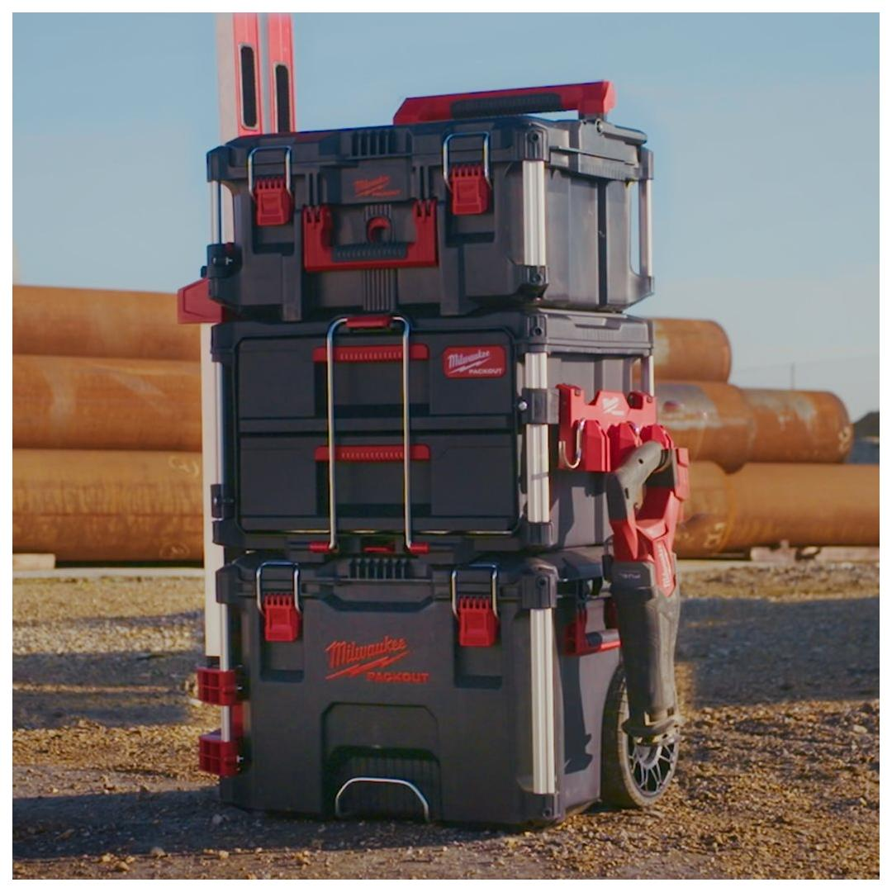
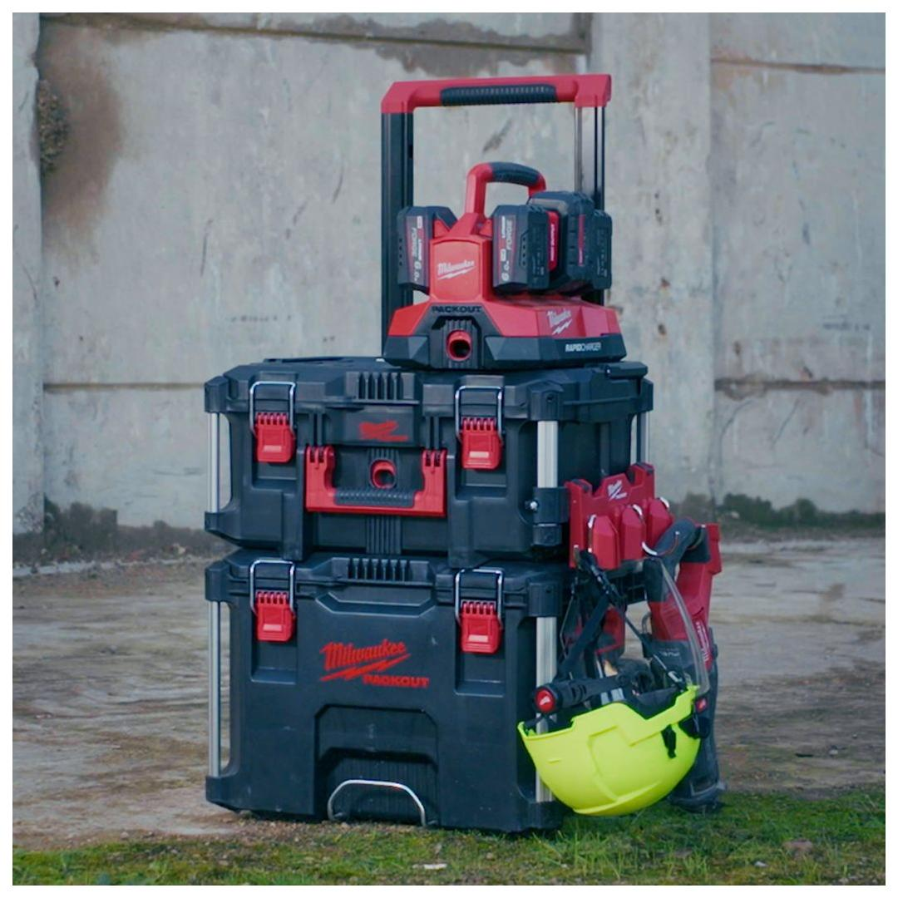
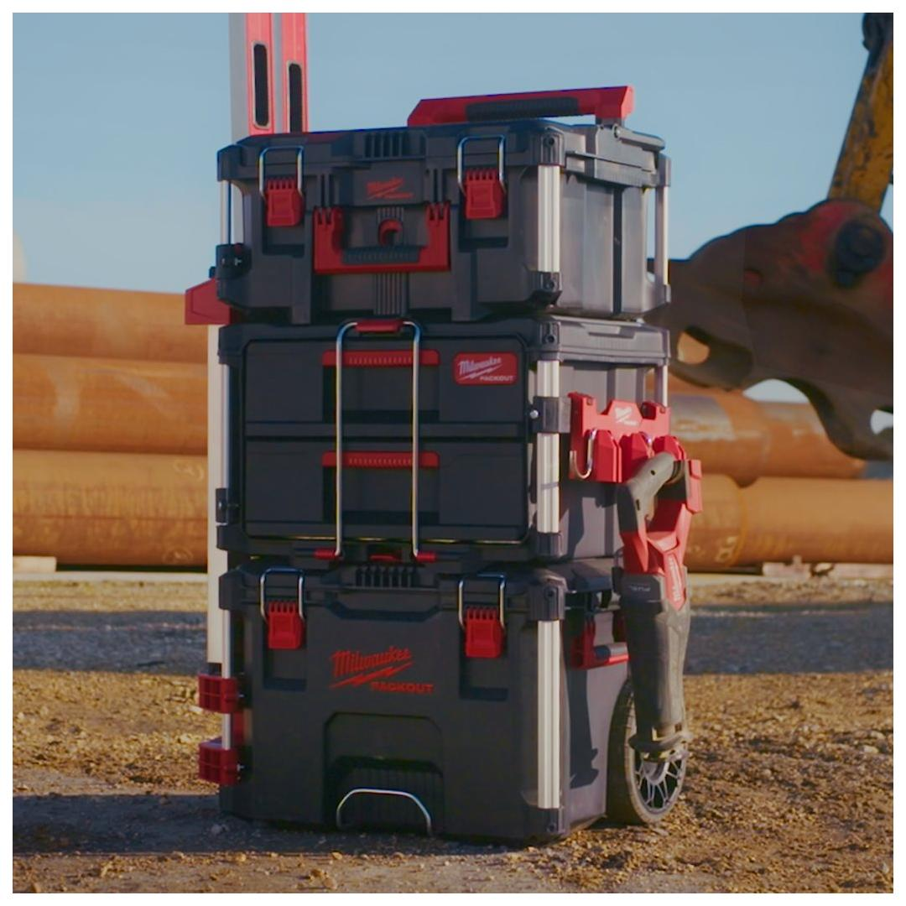
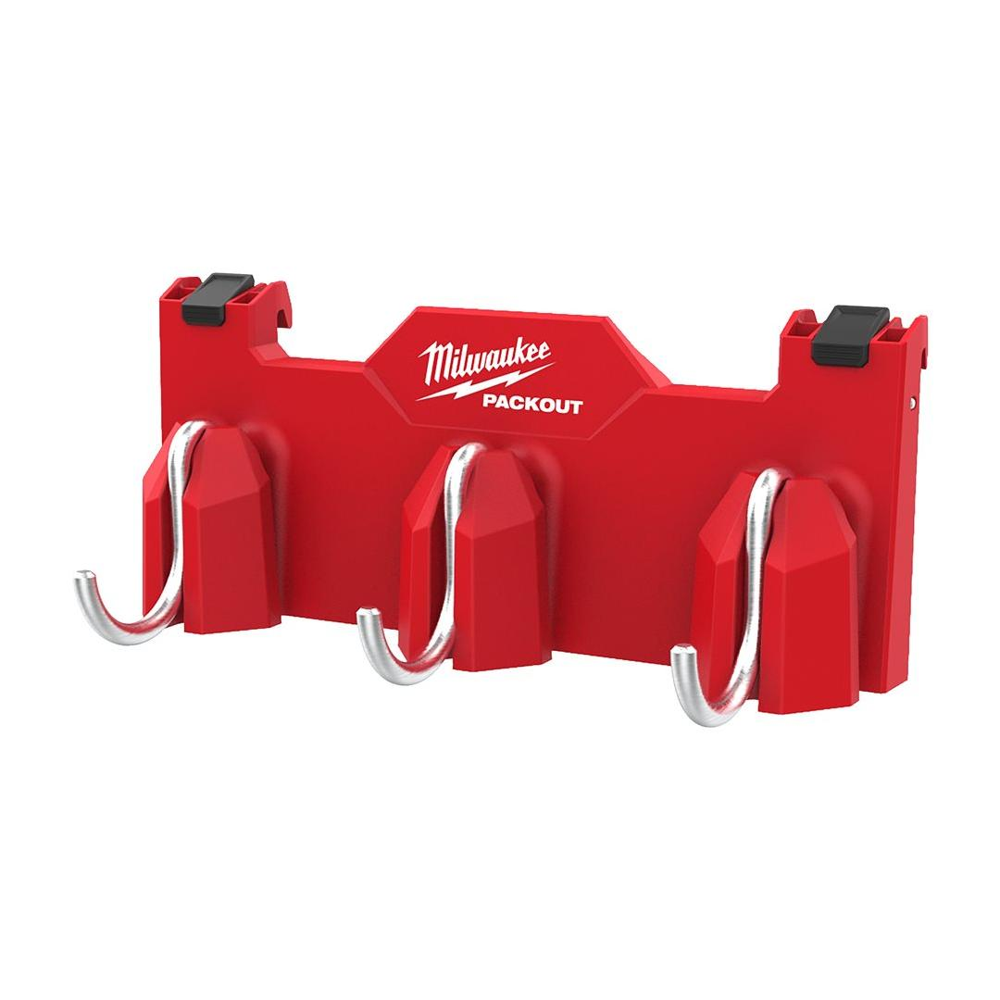
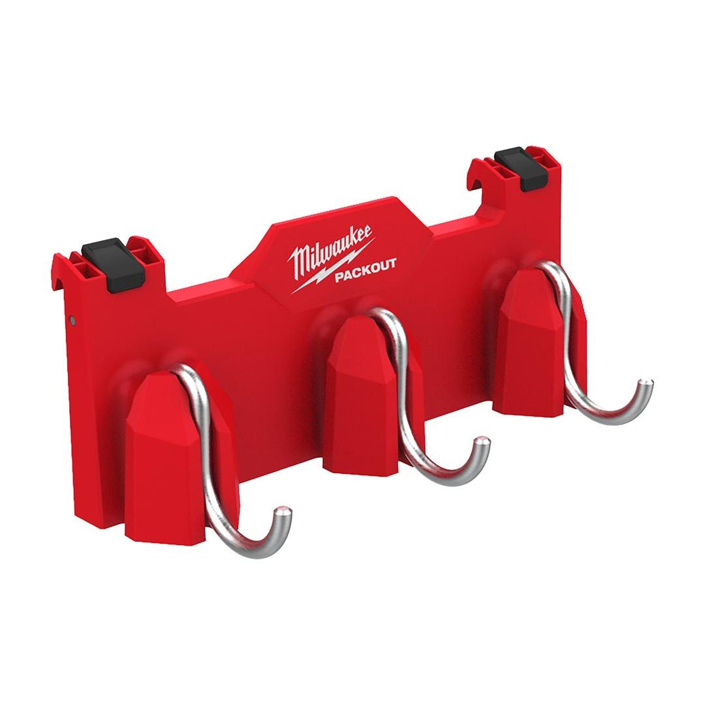

<h1>Milwaukee | PACKOUT Side Mount 3-Hook Rail</h1><p>4932498650</p><div style="display:flex;flex-wrap:wrap;gap:8px"></div><h4>Features</h4><ul><li>Attaches to PACKOUT™ rails in either orientation.</li><li>Reinforced j-hooks for hanging tools and equipment.</li><li>Hooks can be lifted and set 90 degrees on either side to make space when not in use.</li><li>Weight capacity 11.3 kg.</li><li>Part of the PACKOUT™ modular storage system.</li></ul><h4>Information</h4><table><tr><td>Capacity [kg]</td><td>11</td></tr><tr><td>Dimensions (mm)</td><td>120 x 290 x 110</td></tr><tr><td>Pack quantity</td><td>1</td></tr><tr><td>Quantity</td><td>11</td></tr></table><h4>Weight</h4><table><tr><td>WEB_You tube Milwaukee 1x1 Product Clip</td><td>RJAb7MdOf8Q</td></tr></table>